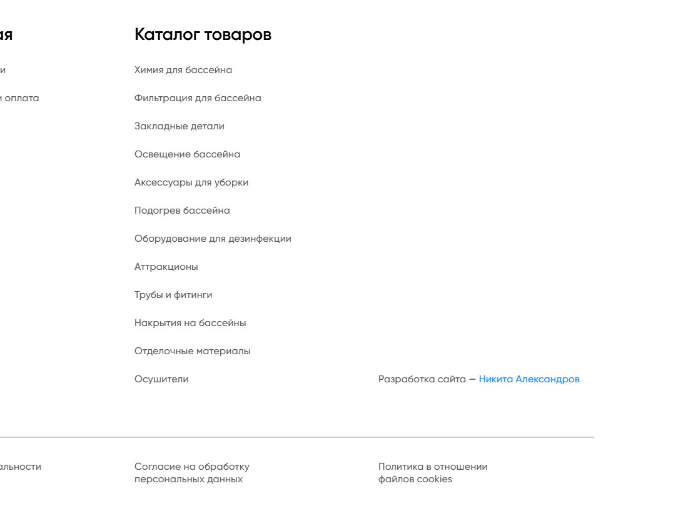
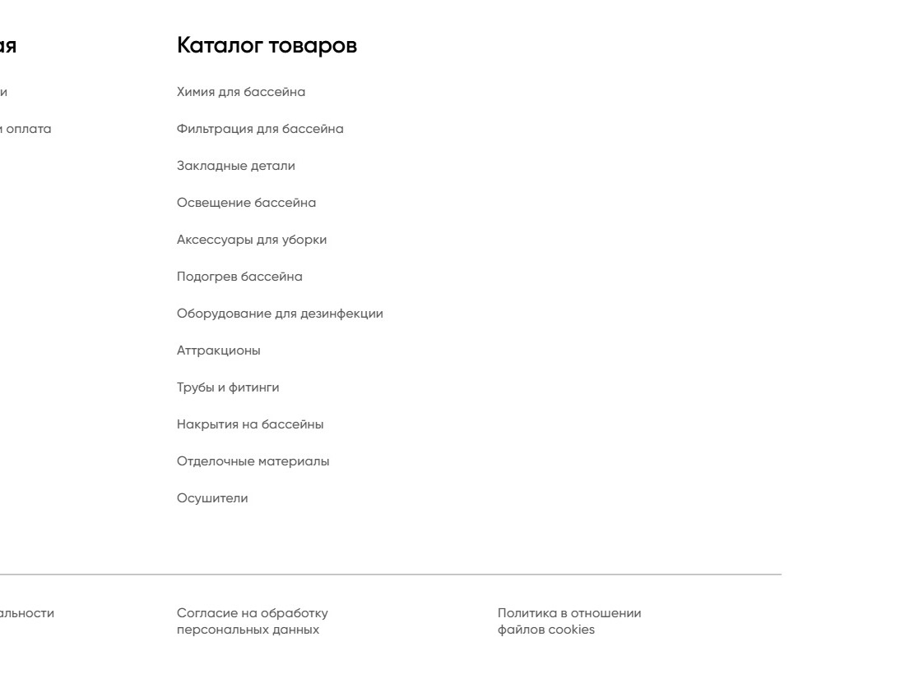

2. Кадр 7 — строка «Разработка сайта — Никита Александров»
Вернул, как ты сказал. В кадре это текст: адрес ссылки на Телеграм снят, контакта нет. Ниже — правый нижний угол подвала.
СталоПодвал, кадр 7
БылоПодвал, кадр 7
Остальной кадр 7 не менялся: корзина, заявка на подбор и подвал остались в одном кадре, как ты решил.
Что не менялось и что проверено
Обложка и кадры 3–6 — те же файлы байт в байт; в кадре 7 изменилась только строка разработчика. Альбом целиком — если захочешь пролистать все семь кадров подряд.
Проверено: все гейты альбома зелёные (поля кадров, пилюли, ползунки, кромка, углы, экран обложки, размытие фона, слова); распознавание текста на кадрах 2 и 7 контактов не нашло; текст кадра 2 лёг без висячих предлогов и разрывов слов, кегль 26 против 25 в прежней версии.